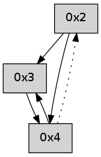

>> << IDX [start] -100 -25 -5 +0 +5 +25 +100 [275.145756006]
 Previous packets
----------------------------------------------------------------------
270.128528 beacon01(adaf) #0 coord=01,02,05,03,04 cycle=368.0ms assoc
-- color-indic=0 64 de 6a
270.138484 beacon02(adaf) #0 coord=01,02,05,03,04 cycle=368.0ms assoc 64 e4 cb
270.148484 beacon05(adaf) #0 coord=01,02,05,03,04 cycle=368.0ms assoc 64 af 87
270.158484 beacon03(adaf) #0 coord=01,02,05,03,04 cycle=368.0ms assoc 64 2c 61
270.168485 beacon04(adaf) #0 coord=01,02,05,03,04 cycle=368.0ms assoc 64 67 2d
270.180110 [Hello(4): seq=62 asym=2 sysInfo= stat=2:8,0,0,0]
----------------------------------------------------------------------
270.546629 beacon01(adaf) #0 coord=01,02,05,03,04 cycle=368.0ms assoc
-- color-indic=0 64 b6 c1
270.556586 beacon02(adaf) #0 coord=01,02,05,03,04 cycle=368.0ms assoc 64 8c 60
270.566585 beacon05(adaf) #0 coord=01,02,05,03,04 cycle=368.0ms assoc 64 c7 2c
270.586587 beacon04(adaf) #0 coord=01,02,05,03,04 cycle=368.0ms assoc 64 0f 86
270.598219 [Hello(2): seq=561 sym=3 sysInfo= stat=3:15,0,0,0]
----------------------------------------------------------------------
270.964731 beacon01(adaf) #0 coord=01,02,05,03,04 cycle=368.0ms assoc
-- color-indic=0 64 61 5f
270.974688 beacon02(adaf) #0 coord=01,02,05,03,04 cycle=368.0ms assoc 64 5b fe
270.984688 beacon05(adaf) #0 coord=01,02,05,03,04 cycle=368.0ms assoc 64 10 b2
270.994688 beacon03(adaf) #0 coord=01,02,05,03,04 cycle=368.0ms assoc 64 93 54
271.004689 beacon04(adaf) #0 coord=01,02,05,03,04 cycle=368.0ms assoc 64 d8 18
271.016320 [Hello(4): seq=63 asym=2 sysInfo= stat=2:9,0,0,0]
----------------------------------------------------------------------
271.382833 beacon01(adaf) #0 coord=01,02,05,03,04 cycle=368.0ms assoc
-- color-indic=0 64 77 9f
271.392789 beacon02(adaf) #0 coord=01,02,05,03,04 cycle=368.0ms assoc 64 4d 3e
271.402792 beacon05(adaf) #0 coord=01,02,05,03,04 cycle=368.0ms assoc 64 06 72
271.412790 beacon03(adaf) #0 coord=01,02,05,03,04 cycle=368.0ms assoc 64 85 94
271.422790 beacon04(adaf) #0 coord=01,02,05,03,04 cycle=368.0ms assoc 64 ce d8
271.434452 [Hello(2): seq=562 sym=3,4 sysInfo= stat=3:15,0,0,0/4:0,0,0,0]
----------------------------------------------------------------------
271.800935 beacon01(adaf) #0 coord=01,02,05,03,04 cycle=368.0ms assoc
-- color-indic=0 64 a0 01
271.810891 beacon02(adaf) #0 coord=01,02,05,03,04 cycle=368.0ms assoc 64 9a a0
271.820892 beacon05(adaf) #0 coord=01,02,05,03,04 cycle=368.0ms assoc 64 d1 ec
271.830892 beacon03(adaf) #0 coord=01,02,05,03,04 cycle=368.0ms assoc 64 52 0a
271.840892 beacon04(adaf) #0 coord=01,02,05,03,04 cycle=368.0ms assoc 64 19 46
271.852559 PARSE ERROR************************
Traceback (most recent call last):
File "PacketAnalysis.py", line 167, in showOperaPacket
structPacket = OperaPacketParse.parsePacket(rawPacket)
File "../../pkg-python/HipSens/Core/OperaPacketParse.py", line 461, in parsePacket
return parseHelloMessage(data)
File "../../pkg-python/HipSens/Core/OperaPacketParse.py", line 127, in parseHelloMessage
assert struct.calcsize("H")*len(neighAddrList) == len(linkList)
AssertionError
48 1a 04 00 00 40 00 02 02 02 03 00 01 02 02 00 53 04 00 00 00 00 4c 04 00 00 00 09 4c 3b
----------------------------------------------------------------------
272.219039 beacon01(adaf) #0 coord=01,02,05,03,04 cycle=368.0ms assoc
-- color-indic=0 64 c8 aa
272.228996 beacon02(adaf) #0 coord=01,02,05,03,04 cycle=368.0ms assoc 64 f2 0b
272.238996 beacon05(adaf) #0 coord=01,02,05,03,04 cycle=368.0ms assoc 64 b9 47
272.248997 beacon03(adaf) #0 coord=01,02,05,03,04 cycle=368.0ms assoc 64 3a a1
272.258999 beacon04(adaf) #0 coord=01,02,05,03,04 cycle=368.0ms assoc 64 71 ed
272.270650 [Hello(2): seq=563 sym=3,4 sysInfo= stat=3:15,0,0,0/4:1,0,0,0]
----------------------------------------------------------------------
272.637141 beacon01(adaf) #0 coord=01,02,05,03,04 cycle=368.0ms assoc
-- color-indic=0 64 1f 34
272.647097 beacon02(adaf) #0 coord=01,02,05,03,04 cycle=368.0ms assoc 64 25 95
272.657098 beacon05(adaf) #0 coord=01,02,05,03,04 cycle=368.0ms assoc 64 6e d9
272.667098 beacon03(adaf) #0 coord=01,02,05,03,04 cycle=368.0ms assoc 64 ed 3f
272.677099 beacon04(adaf) #0 coord=01,02,05,03,04 cycle=368.0ms assoc 64 a6 73
272.688759 [Hello(4): seq=65 sym=3 asym=2 sysInfo= stat=3:1,0,0,0/2:9,0,0,0]
----------------------------------------------------------------------
273.055244 beacon01(adaf) #0 coord=01,02,05,03,04 cycle=368.0ms assoc
-- color-indic=0 64 44 44
273.065200 beacon02(adaf) #0 coord=01,02,05,03,04 cycle=368.0ms assoc 64 7e e5
273.075202 beacon05(adaf) #0 coord=01,02,05,03,04 cycle=368.0ms assoc 64 35 a9
273.085201 beacon03(adaf) #0 coord=01,02,05,03,04 cycle=368.0ms assoc 64 b6 4f
273.095200 beacon04(adaf) #0 coord=01,02,05,03,04 cycle=368.0ms assoc 64 fd 03
273.106864 [Hello(2): seq=564 sym=3,4 sysInfo= stat=3:15,0,0,0/4:2,0,0,0]
----------------------------------------------------------------------
273.473346 beacon01(adaf) #0 coord=01,02,05,03,04 cycle=368.0ms assoc
-- color-indic=0 64 93 da
273.483305 beacon02(adaf) #0 coord=01,02,05,03,04 cycle=368.0ms assoc 64 a9 7b
273.493303 beacon05(adaf) #0 coord=01,02,05,03,04 cycle=368.0ms assoc 64 e2 37
273.503302 beacon03(adaf) #0 coord=01,02,05,03,04 cycle=368.0ms assoc 64 61 d1
273.513304 beacon04(adaf) #0 coord=01,02,05,03,04 cycle=368.0ms assoc 64 2a 9d
273.524968 [Hello(4): seq=66 sym=3 asym=2 sysInfo= stat=3:2,0,0,0/2:9,0,0,0]
----------------------------------------------------------------------
273.891447 beacon01(adaf) #0 coord=01,02,05,03,04 cycle=368.0ms assoc
-- color-indic=0 64 fb 71
273.901404 beacon02(adaf) #0 coord=01,02,05,03,04 cycle=368.0ms assoc 64 c1 d0
273.911404 beacon05(adaf) #0 coord=01,02,05,03,04 cycle=368.0ms assoc 64 8a 9c
273.921404 beacon03(adaf) #0 coord=01,02,05,03,04 cycle=368.0ms assoc 64 09 7a
273.931404 beacon04(adaf) #0 coord=01,02,05,03,04 cycle=368.0ms assoc 64 42 36
273.943045 [Hello(2): seq=565 sym=3,4 sysInfo= stat=3:15,0,0,0/4:3,0,0,0]
----------------------------------------------------------------------
274.309550 beacon01(adaf) #0 coord=01,02,05,03,04 cycle=368.0ms assoc
-- color-indic=0 64 2c ef
274.319508 beacon02(adaf) #0 coord=01,02,05,03,04 cycle=368.0ms assoc 64 16 4e
274.329506 beacon05(adaf) #0 coord=01,02,05,03,04 cycle=368.0ms assoc 64 5d 02
274.339507 beacon03(adaf) #0 coord=01,02,05,03,04 cycle=368.0ms assoc 64 de e4
274.349508 beacon04(adaf) #0 coord=01,02,05,03,04 cycle=368.0ms assoc 64 95 a8
274.361183 [Hello(4): seq=67 sym=3 asym=2 sysInfo= stat=3:3,0,0,0/2:9,0,0,0]
----------------------------------------------------------------------
274.727653 beacon01(adaf) #0 coord=01,02,05,03,04 cycle=368.0ms assoc
-- color-indic=0 64 3a 2f
274.737610 beacon02(adaf) #0 coord=01,02,05,03,04 cycle=368.0ms assoc 64 00 8e
274.747611 beacon05(adaf) #0 coord=01,02,05,03,04 cycle=368.0ms assoc 64 4b c2
274.757609 beacon03(adaf) #0 coord=01,02,05,03,04 cycle=368.0ms assoc 64 c8 24
274.767609 beacon04(adaf) #0 coord=01,02,05,03,04 cycle=368.0ms assoc 64 83 68